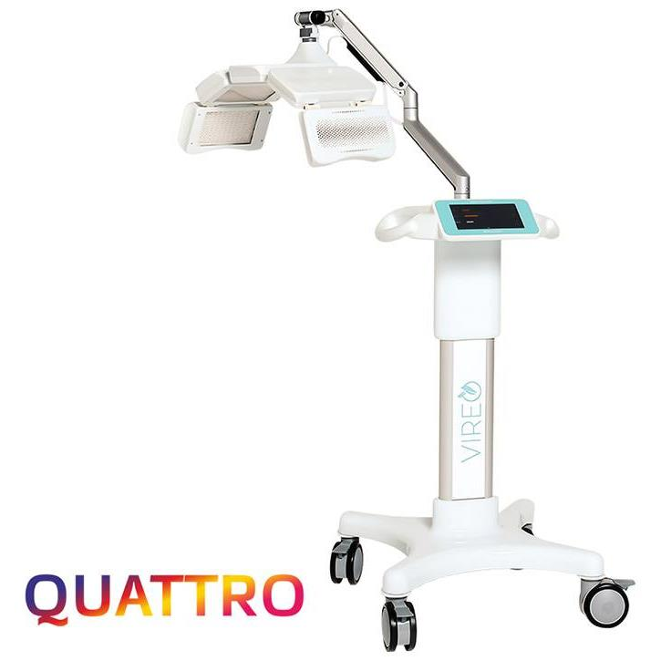

Аппарат
VIREO Quattro
Светодиодный аппарат фотодинамической терапии на мобильной стойке. Синий 400 нм, жёлтый 590 нм, красный 660 нм и ближний ИК 850 нм включаются по отдельности или одновременно — под задачи протокола.
назначение
- Процедуры фотодинамической терапии в дерматологии и косметологии.
- Работа с акне, постакне, фотостарением и гиперпигментацией.
- Купероз и хронические дерматозы.
- Комплексное применение с фотосенсибилизаторами VIREO.
основные характеристики
| Длины волн | 400 / 590 / 660 / 850 нм |
|---|---|
| Источник света | SMD LED, 1200 светодиодов |
| Режимы | Раздельно и одновременно |
| Таймер | от 5 до 60 минут |
| Габариты аппарата | 510 × 510 × 1560 мм |
| Излучатель | 660 × 257 × 42 мм |
| Вес | 14 кг |
| Питание | 100–240 В, 50 Гц |
| Мощность | не более 150 Вт |
| Гарантия | 24 месяца |
комплектация
- Аппарат VIREO Quattro на мобильной стойке — 1 шт.
- Источник питания с кабелем — 1 комплект.
- Очки для защиты от излучения: для врача и пациента.
- Руководство по эксплуатации и паспорт изделия.
с какими препаратами используется
инструкция
Инструкция по эксплуатации VIREO Quattro